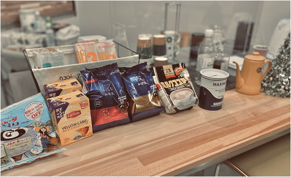

Cafe Cornerおしゃれなカフェのご紹介

食堂の一角でカフェコーナーを始めました。 コーヒーをはじめ、紅茶、ココア、など揃えています。お湯を沸かしてご自由にお飲みください。お代を募金箱にお入れください（金額はこれから）。「あれが飲みいたい」「これが飲みたい」などのリクエストも募集中！
食堂の一角でカフェコーナーを始めました。 コーヒーをはじめ、紅茶、ココア、など揃えています。お湯を沸かしてご自由にお飲みください。お代を募金箱にお入れください（金額はこれから）。「あれが飲みいたい」「これが飲みたい」などのリクエストも募集中！